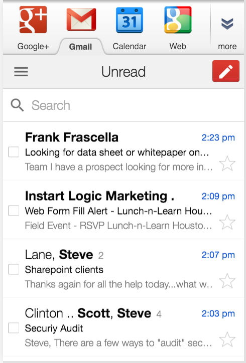

Note: Include an alt attribute on all foreground images, with empty alt attribute for decorative images.
Image Optimization TipsLast-Modified or ETag header to enable cache validation. ETags provide revalidation tokens automatically sent by client to check if there are file changes since last requested. async attribute in your <script> tags so client can continue downloading assets instead of waiting as scripts are downloaded, parsed and excecuted.Content-Type: text/html; charset=UTF-8 reduces browser processing. Can start parsing HTML immediately when it knows which character set it has.width=device-width, initial-scale=1.
<meta name=viewport content="width=device-width, initial-scale=1">
vh, vw and percents for width.
<meta name="viewport" content="width=device-width, user-scalable=yes">
@viewport { viewport-properties }
Specifies:
<meta name="viewport" content="initial-scale=1.0, maximum-scale=1.0, minimum-scale=1.0, user-scalable=no, width=device-width">
<meta name="viewport" content="width=device-width, user-scalable=yes, initial-scale=1">
vh, vw and percents for width.
Size tap targets appropriately
Perceivable: Content & UI components
Operable: UI and Nav
Understandable: Information and operation of UI
Robust: Content interprable by UAs, including AT.
<a href="#maincontent" class="skiplink">Skip to main content</a>
.skiplink {
opacity: 0;
}
.skiplink:focus {
opacity: 1;
}
.skiplink {
transform: scale(0);
display: inline-block;
}
.skiplink:focus {
transform: scale(1);
}